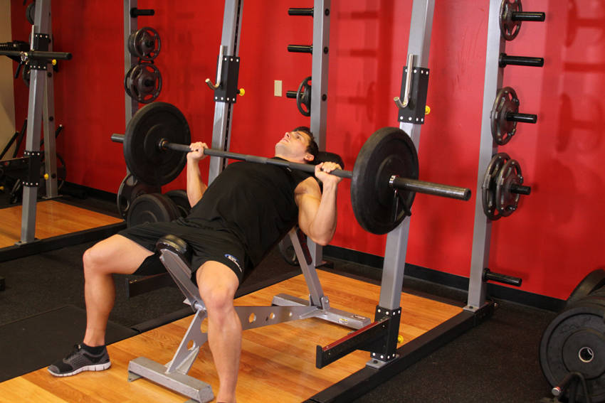

- Lie back on an incline bench. Using a medium-width grip (a grip that creates a 90-degree angle in the middle of the movement between the forearms and the upper arms), lift the bar from the rack and hold it straight over you with your arms locked. This will be your starting position.
- As you breathe in, come down slowly until you feel the bar on you upper chest.
- After a second pause, bring the bar back to the starting position as you breathe out and push the bar using your chest muscles. Lock your arms in the contracted position, squeeze your chest, hold for a second and then start coming down slowly again. Tip: it should take at least twice as long to go down than to come up.
- Repeat the movement for the prescribed amount of repetitions.
- When you are done, place the bar back in the rack.